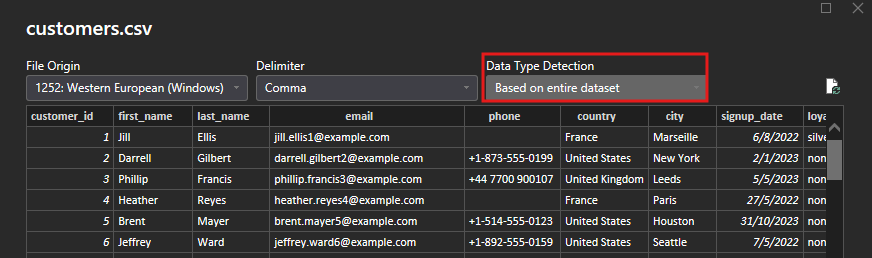
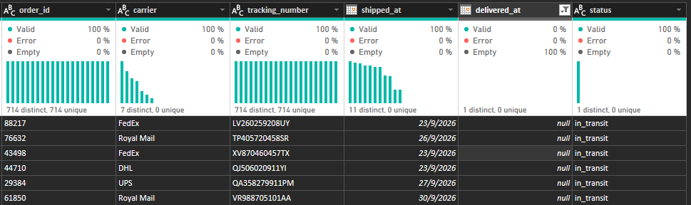
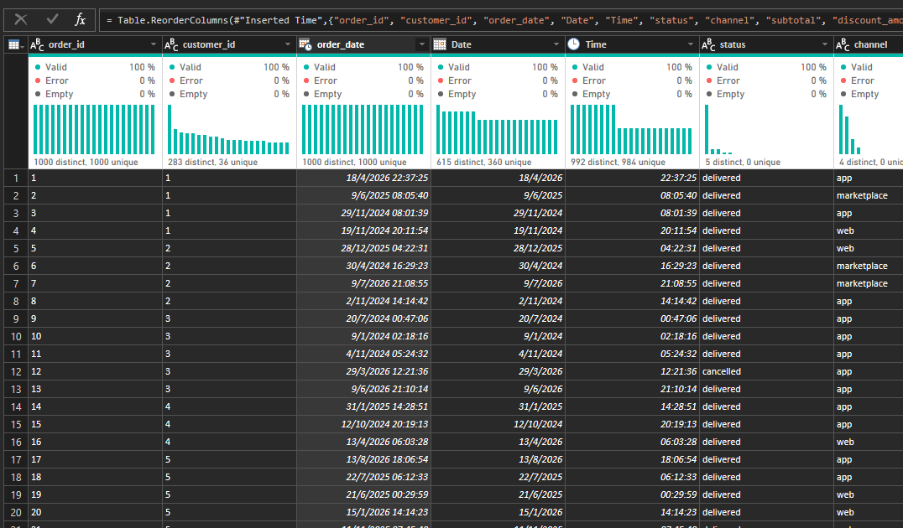
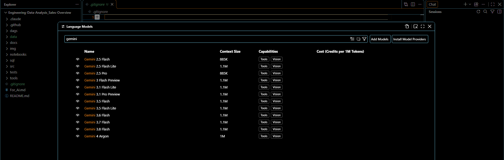
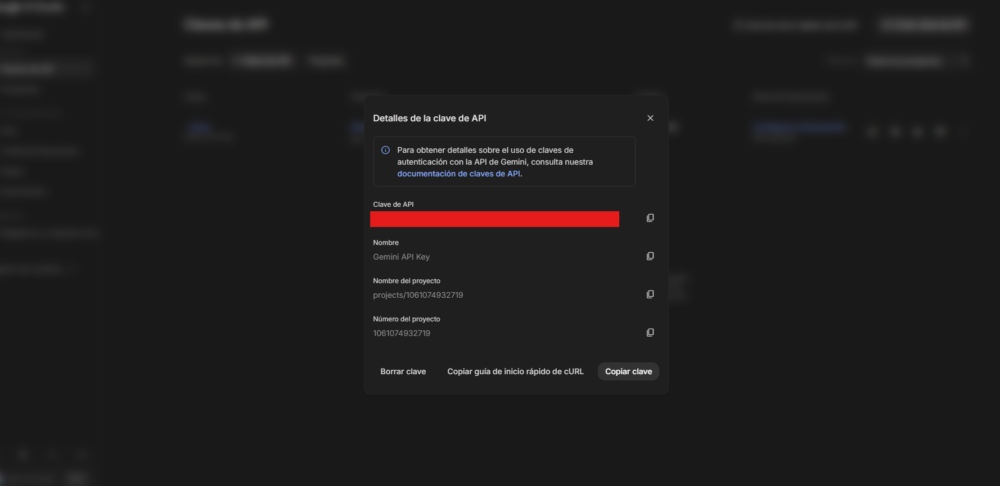

SummitBase Outfitters
End-to-End Data Lifecycle, Business Intelligence & AI Integration

Business Case & Project Overview
This capstone portfolio project demonstrates the management of the entire data lifecycle—from initial containerized infrastructure and database configuration to automated ETL workflows, version-controlled Business Intelligence, and AI LLM context integration. Built to enterprise standards, it mirrors a real-world corporate data engineering assignment.
For this practical case, the data ecosystem was conceptualized around SummitBase Outfitters—an e-commerce and inventory management platform designed for mountaineering, camping, and outdoor exploration enthusiasts. The relational data model spans 7 core entities (products, customers, orders, order_items, payments, shipments, and returns), evaluating inventory metrics across 1,500 pieces of outdoor gear, cost margins (unit_cost vs. unit_price), customer acquisition channels, and weight-based shipping logistics.
- Methodology: Scrum-Agile & DataOps
- BI Governance: Power BI Project (
.pbip/ TMDL) - Automation: n8n & Python ETL Pipelines
- Data Quality: Pytest & Power Query Profiling
- AI Integration: LLM-Readable Markdown Architecture
- Repository: Engineering-Data-Analysis_Sales-Overview
Project Specifications
- Domain: Outdoor E-Commerce & Logistics
- Dataset Volume: 90,000+ Orders / 26,000 Customers
- Catalog Size: 1,500 Equipment SKUs
- Core Stack: SQL, Docker, Python, Power BI, n8n
- Author: Kevin Robles
Outdoor Gear Products
Customer Profiles
Orders & Transactions
Lifecycle Phases & Tables
Architecture & Technology Stack
Enterprise tools, modular repository design, and the 7-phase engineering workflow behind SummitBase Outfitters
Infrastructure
Containerized deployment, version control, and relational database foundations.
Data Processing
Exploratory data analysis, schema validation, and programmatic cleaning.
Automation & QA
Automated pipeline orchestration, IDE optimization, and unit testing.
BI, UX/UI & AI
Version-controlled semantic models, executive storytelling, and LLM context.
Phases 1 – 4: Foundation & Automation
1Environment & Infrastructure Setup
Git, Docker & Relational SQL
- Configured strict version control with custom
.gitignorepolicies to prevent binary bloat and credential leaks. - Containerized the local environment via Docker and connected a relational SQL database to store raw e-commerce tables securely.
2Professional Scrum-Agile Workflow
Governance & Separation of Concerns
- Executed sprint planning, task tracking, and corporate-grade documentation following Scrum-Agile practices.
- Structured the repository into isolated modules (
src/,sql/,tests/,data/,dags/,docs/,notebooks/).
3IDE Configuration & Deterministic Testing
VS Code, PBIP & Unit Tests
- Optimized Visual Studio Code to inspect text-based Power BI files (
.pbip/ TMDL) alongside Python scripts. - Implemented Unit Tests to validate data integrity and prevent silent regressions prior to downstream processing.
4Data Extraction & Automation (n8n)
Workflow Orchestration
- Designed a complete workflow architecture diagram and built an automated pipeline in n8n to centralize data ingestion and schedule recurring updates.
Phases 5 – 7: Analytics, BI & AI
5Data Cleaning, Profiling & EDA
Python, Pandas & Power Query
- Conducted Exploratory Data Analysis (EDA) using Python, Anaconda, and Jupyter Notebooks with Pandas.
- Switched Power Query profiling to evaluate the entire dataset rather than the default 1,000-row sample, accurately resolving null delivery timestamps (in-transit orders), boolean opt-ins, and split Date/Time columns.
6Business Intelligence & PBIP Governance
Power BI (.pbip / TMDL), UX/UI & Security
- Engineered an interactive Power BI Dashboard stored in
.pbipformat, decoupling theProject.SemanticModel(TMDL) andProject.Report(PBIR) for granular Git diffing of DAX measures and schema relationships. - Applied modern UX/UI principles across the dashboard, technical reports, and stakeholder presentations in Canva.
7AI Integration (Standout Feature)
LLM-Readable Context & Gemini in VS Code
- Authored dedicated AI-readable Markdown context files (
For_AI.mdand directory-levelreadme_src.md) tailored for Large Language Models. - Integrated Gemini AI directly within Visual Studio Code to audit repository context, accelerate DAX/SQL validation, and generate automated analytical insights.
Project Gallery & Technical Evidence
Visual walkthrough of data profiling, schema transformations, and AI integration in SummitBase Outfitters


1. Full-Dataset Data Profiling
Configured Power Query data type detection to inspect the entire dataset instead of the default 1,000-row sample, ensuring 100% schema accuracy across 26,000 customers.


2. Logistics & Null Integrity Audit
Audited shipments.csv (83,885 records) to verify that null values in delivered_at strictly correspond to active in_transit orders across carriers (FedEx, DHL, UPS, Royal Mail).


3. Temporal Normalization (Date & Time)
Normalized order_date timestamps across 90,000 orders into dedicated Date and Time columns to optimize Star Schema calendar joins and intraday peak analysis.


4. AI Integration in VS Code
Connected Gemini LLMs inside Visual Studio Code alongside structured .md context files to enable AI-assisted code review and semantic model analysis.


5. API Governance & Security
Provisioned dedicated Gemini API credentials under strict environment variable isolation to protect secrets during automated analysis workflows.
Project Deliverables & Interactive Hub
Access the source code, technical documentation, Power BI semantic model, and interactive dashboard
GitHub Repository
Complete codebase including src/ Python modules, sql/ scripts, data/ CSVs, .pbip TMDL definitions, and AI context files.
Architecture Action Plan
21-page comprehensive technical document detailing Data Lakehouse architecture, Medallion layers, QA testing, and PBIP governance.
Process Documentation
Step-by-step documentation of the data cleaning workflow, Power Query transformations, null handling, and Gemini AI setup.
Executive Presentation
Stakeholder presentation and shared cloud folder containing additional visual assets, reports, and business insights.